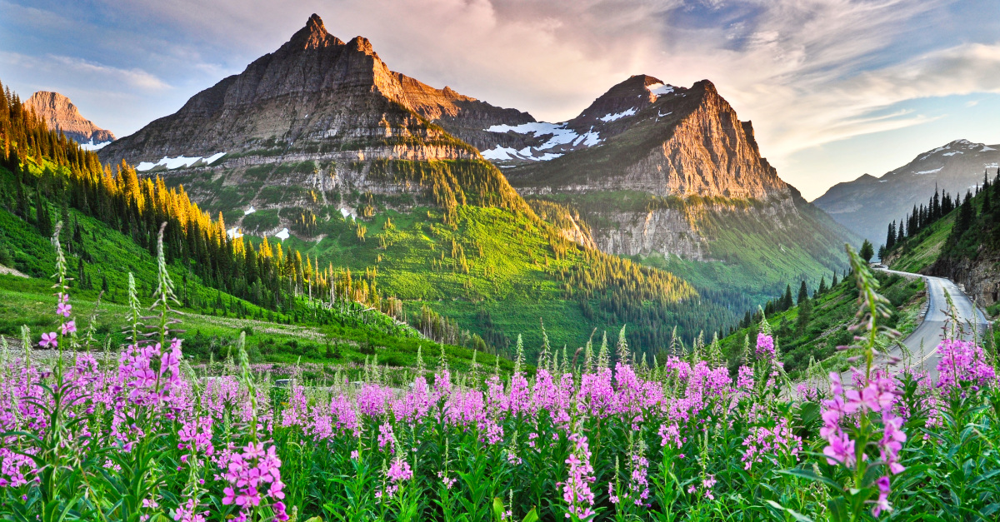
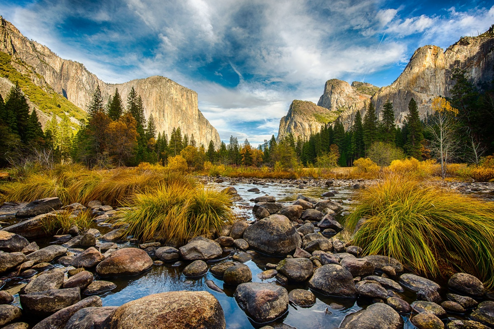
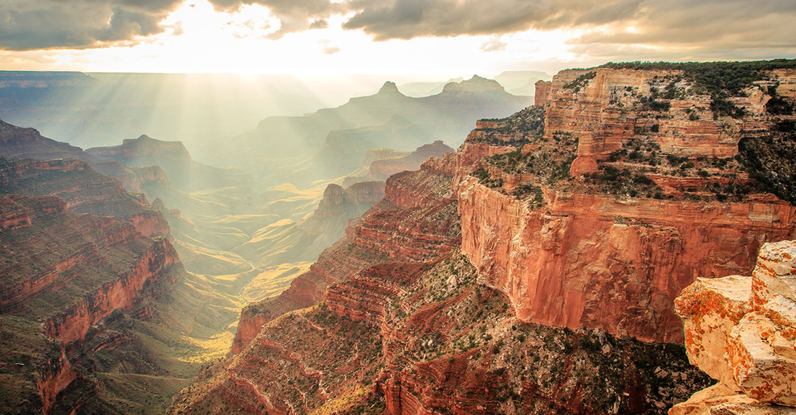

Top Ten Questions about Glacier National Park
- Q: Where is Glacier National Park located?
- A: Glacier National Park is located in northwestern Montana on the U.S./Canadian border. Access to the park from the east and west is along U.S. Highway 2. Park headquarters is located in West Glacier.
- Q: When is the park open?
- A: Glacier National Park is open year-round, 24 hours a day. In the fall winter and spring, some roads are inaccessible by car due to snow.
- Q: What does it cost to enter the park?
- A: Glacier National Park is open year-round, 24 hours a day. In the fall winter and spring, some roads are inaccessible by car due to snow.
- Q: Where are the closest airports to the park? Is there transportation from the airports to the park?
- A: Glacier Park International Airport in Kalispell, Montana is 25 miles west of park headquarters in West Glacier, Montana.
- Q: What is the closest train station to the park?
- A: Amtrak rail lines parallel the southern and southwestern borders of the park. Amtrak stops at West Glacier (Belton), East Glacier (summer only), and Essex (upon request).
- Q: What transportation is available within the park?
- A: In addition to private automobiles, guided tours are available in the main sections of the park. Contact Glacier Park, Inc. and Sun Tours for information (see addresses and telephone numbers below). Rental cars are available in neighboring communities.
- Q: Where are the visitor centers located in the park?
- A: Visitor centers are located in Apgar, Logan Pass, and St. Mary. Each of these visitor centers, as well as the Many Glacier and Two Medicine Ranger Stations, have park rangers on duty throughout the summer months to answer questions and provide information. During the winter months, Apgar Visitor Center is open on week-ends.
- Q: Do you have campgrounds in the park? Can I make a reservation?
- A: Glacier National Park has 13 campgrounds, which provide just over 1000 campsites. Most of the campgrounds are operated on a "first come, first serve" basis. Fish Creek and St. Mary Campgrounds will be available for reservation by calling 1-800-365-2267. Click here for more detailed information on camping.
- Q: Is it possible to reserve a backcountry campsite?
- A: Reservations for backcountry campsites may be made in advance, beginning April 1 for the upcoming summer. For further information on backcountry camping and for making reservations, visit our website section on Backcountry Camping.
- Q: Can I drive my RV along the Going-to-the-Sun Road?
- A: Vehicles, and vehicle combinations, longer than 21 feet (including bumpers) or wider than 8 feet (including mirrors) are prohibited between Avalanche Campground and the Sun Point parking area. You may however, drive to Avalanche if traveling east, and to Sun Point, if traveling west. Vehicles over 10 feet in height may have difficulty driving west from Logan Pass due to rock overhangs. Stock trucks and trailers may access Packers Roost and Siyeh Bend.
Glacier National Park
- Mountain goats are a symbol of the park.
- Glacier National Park is a part of the world’s first international peace park.
- Going-to-the-Sun Road is a spectacular marvel and a must-see on your trip to Glacier.
- Evidence of human use in the area dates back over 12,000 years.
Yosemite National Park
- Yosemite is home to one of the tallest waterfalls in the world.
- Yosemite’s granite rock formations glow like fire at sunset.
- The park’s diverse landscape supports more than 400 species.
- Yosemite Is Famous for Its Giant Sequoia Trees.
Grand Canyon National Park
- The Grand Canyon is bigger than the state of Rhode Island.
- The Grand Canyon itself can influence the weather.
- The Grand Canyon is one of the most visited national parks in the United States.
- The Grand Canyon was carved over some 6 million years.


